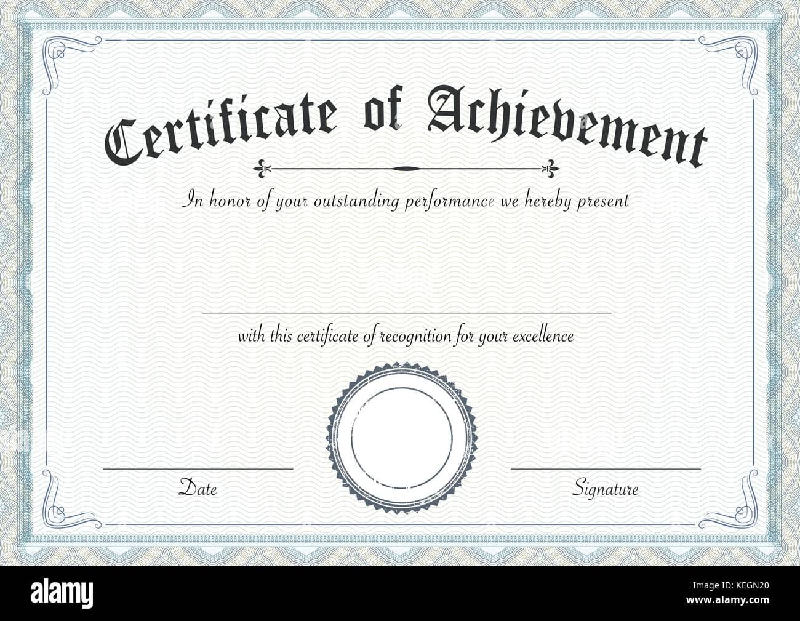

Nuestros servicios
Fines estéticos
Instalaciones cuyo objetivo radique en resaltar la belleza del jardín, iluminando macetas, canteros o brindando una iluminación general del ambiente
Certificado
Fines funcionales
Instalación dedicada a brindar funcionalidad a los componentes presentes en el jardín. Estos pueden ser enchufes, fotocontroles o temporizadores para gestionar y/o automatizar el funcionamiento de luminarias o equipos de jardinería
Luminarias
Iluminación general o epecífica para resaltar la belleza del ambiente

Automatización de luces
Controlar el encendido y apagado de luces con el fina de obtimizar el consumo de energía

Tomacorrientes exteriores
Instalar puntos de energía en el jardín para poder conectar equipos, luces, etc.

Automatización de equipos
Automatizar equipos relacionados al mantenimiento del jardín, como sistemas de riego o bombas de agua, para poder garantizar un correcto estado del jardín optimizando el consumo de energía.